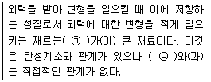
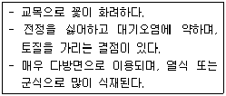
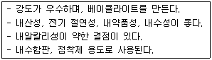
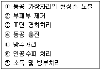

조경기능사 (2014-07-20 기출문제)
1과목: 조경일반
1. 창경궁에 있는 통명전 지당의 설명으로 틀린 것은?(오류 신고가 접수된 문제입니다. 반드시 정답과 해설을 확인하시기 바랍니다.)
- 장방형으로 장대석으로 쌓은 석지이다.
- 무지개형 곡선 형태의 석교가 있다.
- 괴석 2개와 앙련(仰蓮) 받침대석이 있다.
- 물은 직선의 석구를 통해 지당에 유입된다.
(정답률: 62%)

2. 도면 작업에서 원의 반지름을 표시할 때 숫자 앞에 사용하는 기호는?
- ø
- D
- R
- Δ
(정답률: 78%)
3. 짐을 운반하여야 한다. 다음 중 같은 크기의 짐을 어느 색으로 포장했을 때 가장 덜 무겁게 느껴지는 가?
- 다갈색
- 크림색
- 군청색
- 쥐색
(정답률: 89%)
4. 이탈리아 조경 양식에 대한 설명으로 틀린 것은?
- 별장이 구릉지에 위치하는 경우가 많아 정원의 주류는 노단식
- 노단과 노단은 계단과 경사로에 의해 연결
- 축선을 강조하기 위해 원로의 교점이나 원점에 분수 등을 설치
- 대표적인 정원으로는 베르사유 궁원
(정답률: 84%)
5. 다음 중 9세기 무렵에 일본 정원에 나타난 조경양식은?
- 평정고산수양식
- 침전조 양식
- 다정양식
- 회유임천양식
(정답률: 50%)
6. 조선시대 궁궐의 침전 후정에서 볼 수 있는 대표적인 것은?
- 자수화단(花壇)
- 비폭(飛瀑)
- 경사지를 이용해서 만든 계단식의 노단
- 정자수
(정답률: 82%)
7. 조선시대 선비들이 즐겨 심고 가꾸었던 사절우(四節友)에 해당하는 식물이 아닌 것은?
- 난초
- 대나무
- 국화
- 매화나무
(정답률: 81%)
8. 수도원 정원에서 원로의 교차점인 중정 중앙에 큰나무 한 그루를 심는 것을 뜻하는 것은?
- 파라다이소(Paradiso)
- 바(Bagh)
- 트렐리스(Trellis)
- 페리스틸리움(Peristylium)
(정답률: 76%)
9. 위험을 알리는 표시에 가장 적합한 배색은?
- 흰색-노랑
- 노랑-검정
- 빨강-파랑
- 파랑-검정
(정답률: 80%)
10. 다음 조경의 효과로 가장 부적합한 것은?
- 공기의 정화
- 대기오염의 감소
- 소음 차단
- 수질오염의 증가
(정답률: 92%)
11. 물체의 앞이나 뒤에 화면을 놓은 것으로 생각하고, 시점에서 물체를 본 시선과 그 화면이 만나는 각점을 연결하여 물체를 그리는 투상법은?
- 사투상법
- 투시도법
- 정투상법
- 표고투상법
(정답률: 67%)
12. “물체의 실제 치수”에 대한 “도면에 표시한 대상물”의 비를 의하는 용어는?
- 척도
- 도면
- 표제란
- 연각선
(정답률: 88%)
13. 이격비의 “낙양원명기”에서 원(園)을 가리키는 일반적인 호칭으로 사용되지 않은 것은?
- 원지
- 원징
- 별서
- 택원
(정답률: 70%)
14. 수집된 자료를 종합한 후에 이를 바탕으로 개략적인 계획안을 결정하는 단계는?
- 목표설정
- 기본구상
- 기본설계
- 실시설계
(정답률: 71%)
15. 스페인 정원의 특징과 관계가 먼 것은?
- 건물로서 완전히 둘러싸인 가운데 뜰 형태의 정원
- 정원의 중심부는 분수가 설치된 작은 연못 설치
- 웅대한 스케일의 파티오 구조의 정원
- 난대, 열대 수목이나 꽃나무를 화분에 심어 중요한 자리에 배치
(정답률: 70%)
2과목: 조경재료
16. 다음 중 녹나무과(科)로 봄에 가장 먼저 개화하는 수종은?
- 치자나무
- 호랑가시나무
- 생강나무
- 무궁화
(정답률: 82%)
17. 다음 중 조경수목의 계절적 현상 설명으로 옳지 않은 것은?
- 싹틈: 눈은 일반적으로 지난 해 여름에 형성되어 겨울을 나고 봄에 기온이 올라감에 따라 싹이 튼다.
- 개화: 능소화, 무궁화, 배롱나무 등의 개화는 그 전년에 자란 가지에서 꽃눈이 분화하여 그 해에 개화한다.
- 결실: 결실량이 지나치게 많을 때에는 다음 해의 개화 결실이 부실해지므로 꽃이 진 후 열매을 적당히 솎아 준다.
- 단풍: 기온이 낮아짐에 따라 잎 속에서 생리적인 현상이 일어나 푸른 잎이 다홍색, 황색 또는 갈색으로 변하는 현상이다.
(정답률: 70%)
18. 콘크리트용 혼화재료로 사용되는 고로슬래그 미분말에 대한 설명 중 틀린 것은?
- 고로슬래그 미분말을 사용한 콘크리트는 보통 콘크리트보다 콘크리트 내부의 세공경이 작아져 수밀성이 향상된다.
- 고로슬래그 미분말은 플라이애시나 실리카흄에 비해 포틀랜드시멘트와의 비중차가 작아 혼화재로 사용할 경우 혼합 및 분산성이 우수하다.
- 고로슬래그 미분말을 혼화재로 사용한 콘크리트는 염화물이온 침투를 억제하여 철근부식 억제효과가 있다
- 고로슬래그 미분말의 혼합률을 시멘트 중량에 대하여 70% 혼합한 경우 중성화 속도가 보통 콘크리트의 2배 정도로 감소된다.
(정답률: 70%)
19. 다음 재료 중 연성(延性:Ductility)이 가장 큰 것은?
- 금
- 철
- 납
- 구리
(정답률: 43%)
20. 콘크리트의 응결, 경화 조절의 목적으로 사용되는 혼화제에 대한 설명 중 틀린 것은?
- 콘크리트용 응결, 경화 조정제는 시멘트의 응결, 경화 속도를 촉진시키거나 지연시킬 목적으로 사용되는 혼화제이다.
- 촉진제는 그라우트에 의한 지수공법 및 뿜어붙이기 콘크리트에 사용된다.
- 지연제는 조기 경화현상을 보이는 서중 톤크리트나 수송거리가 먼 레디믹스트 콘크리트에 사용된다.
- 급결제를 사용한 콘크리트의 조기 강도증진은 매우 크나 장기강도는 일반적으로 떨어진다.
(정답률: 54%)
21. 크기가 지름 20~30㎝ 정도의 것이 크고 작은 알로 고루 고루 섞여져 있으며 형상이 고르지 못한 깬돌이라 설명하기도 하며, 큰 돌을 깨서 만드는 경우도 있어 주로 기초용으로 사용하는 석재의 분류명은?
- 산석
- 이면석
- 잡석
- 판석
(정답률: 88%)
22. 다음 괄호 안에 들어갈 용어로 맞게 연결된 것은 ?

- (ㄱ) 강도(strength), (ㄴ) 강성(stillness)
- (ㄱ) 강성(stillness), (ㄴ) 강도(strength)
- (ㄱ) 인성(toughness), (ㄴ) 강성(stiliness)
- (ㄱ) 인성(toughness), (ㄴ) 강도(strength)
(정답률: 62%)
23. 조경용 포장재료는 보행자가 안전하고, 쾌적하게 보행할 수 있는 재료가 선정되어야 한다. 다음 선정기준 중 옳지 않은 것은?
- 내구성이 있고, 시공. 관리비가 저렴한 재료
- 재료의 질감, 색채가 아름다운 것
- 재료의 표면 청소가 간단하고, 건조가 빠른 재료
- 재료의 표면이 태양 광선의 반사가 많고, 보행시 자연스런 매끄러운 소재
(정답률: 88%)
24. 다음 설명에 가장 적합한 수종은?

- 왕벚나무
- 수양버들
- 전나무
- 벽오동
(정답률: 87%)
25. 다음 설명하는 열경화수지는?

- 요소계수지
- 메타아크릴수지
- 염화비닐계수지
- 페놀계수지
(정답률: 63%)
26. 다음 중 곰솔(해송)에 대한 설명으로 옳지 않은 것은?
- 동아(冬芽)는 붉은 색이다.
- 수피는 흑갈색이다.
- 해안지역의 평지에 많이 분포한다.
- 줄기는 한해에 가지를 내는 층이 하나여서 나무의 나이를 짐작할 수 있다.
(정답률: 68%)
27. 목재를 연결하여 움직임이나 변형 등을 방지하고, 거푸집의 변형을 방지하는 철물로 사용하기 가장 부적합한 것은?
- 볼트, 너트
- 못
- 꺾쇠
- 리벳
(정답률: 72%)
28. 다음 중 합판에 관한 설명으로 틀린 것은?
- 합판을 베니어판이라 하고 베니어란 원래 목재를 앏게 한 것을 말하며, 이것을 단판이라고도 한다.
- 슬라이스트 베니어(Sliced veneer)는 끌로서 각목을 얇게 절단한 것으로 아름다운 결을 장식용으로 이용하기에 좋은 특징이 있다.
- 합판의 종류에는 섬유판, 조각판, 적층판 및 강화적층재 등이 있다.
- 합판의 특징은 동일한 원재로부터 많은 장목판과 나무결 무늬판이 제조되며, 팽창 수축 등에 의한 결점이 없고 방향에 따른 강도 차이가 없다.
(정답률: 57%)
29. 한국의 전통조경 소재 중 하나로 자연의 모습이나 형상석으로 궁궐 후원 첨경물로 석분에 꽃을 심듯이 꽂거나 화계 등에 많이 도입되었던 경관석은?
- 각석
- 괴석
- 비석
- 수수분
(정답률: 82%)
30. 자동차 배기가스에 강한 수목으로만 짝지어진 것은?
- 화백, 향나무
- 삼나무, 금목서
- 자귀나무, 수수꽃다리
- 산수국, 자목련
(정답률: 78%)
31. 질량 113㎏의 목재를 절대건조시켜서 100㎏으로 되었다면 전건량기준 함수율은?
- 0.13%
- 0.30%
- 3.0%
- 13.00%
(정답률: 74%)
32. 다음 중 은행나무의 설명으로 틀린 것은?
- 분류상 낙엽활엽수이다.
- 나무껍질은 회백색, 아래로 깊이 갈라진다.
- 양수로 적윤지 토양에 생육이 적당하다.
- 암수딴그루이고 5월초에 잎과 꽃이 함께 개화한다.
(정답률: 78%)
33. 다음 중 플라스틱 제품의 특징으로 옳은 것은?
- 불에 강하다.
- 비교적 저온에서 가공성이 나쁘다.
- 흡수성이 크고 투수정이 불량하다.
- 내후성 및 내광성이 부족하다.
(정답률: 52%)
34. 장미과(科) 식물이 아닌 것은?
- 피라칸다
- 해당화
- 아카시나무
- 왕벚나무
(정답률: 61%)
35. 골재의 표면수는 없고, 골재 내부에 빈틈이 없도록 물로 차 있는 상태는?
- 절대건조상태
- 기건상태
- 습윤상태
- 표면건조 포화상태
(정답률: 75%)
3과목: 조경 시공 및 관리
36. 수목식재시 수목을 구덩이에 앉히고 난 후 훍을 넣는 데 수식(물죔)과 토식(흙죔)이 있다. 다음 중 토식을 실시하기에 적합하지 않은 수종은?
- 목련
- 전나무
- 서향
- 해송
(정답률: 55%)
37. 식물의 아래 잎에서 황화현상이 일어나고 심하면 잎 전면에 나타나며, 잎이 작지만 잎수가 감소하며 초본류의 초장이 작아지고 조기 낙엽이 비료결핍의 원인이라면 어느 비료 요소와 관련된 설명인가?
- P
- N
- Mg
- K
(정답률: 72%)
38. 뿌리분의 크기를 구하는 식으로 가장 적합한 것은?
- 24 + (N-3)×d
- 24 + (N+3)÷d
- 24 + (n-3)+d
- 24 - (n-3)-d
(정답률: 82%)
39. 제초제 1000ppm은 몇 %인가?
- 0.01%
- 0.1%
- 1%
- 10%
(정답률: 56%)
40. 수목 외과 수술의 시공 순서로 옳은 것은

- ①-⑥-②-③-④-⑤-⑦
- ②-⑦-①-⑥-⑤-③-④
- ①-②-③-④-⑤-⑥-⑦
- ②-①-⑦-④-⑤-③-⑥
(정답률: 67%)
41. 저온의 해를 받은 수목의 관리방법으로 적당하지 않은 것은?
- 멀칭
- 바람막이 설치
- 강전정과 과다한 시비
- wilt-pruf(시들음방지제) 살포
(정답률: 85%)
42. 더운 여름 오후에 햇빛이 강하면 수간의 남서쪽 수피가 열에 의해서 피해(터지거나 갈라짐)를 받을 수 있는 현상을 무엇이라 하는가?
- 피소
- 상렬
- 조상
- 한상
(정답률: 70%)
43. 다음 중 재료의 할증률이 다른 것은?
- 목재(각재)
- 시멘트벽돌
- 원형철근
- 합판(일반용)
(정답률: 42%)
44. 소형고압블록 포장의 시공방법에 대한 설명으로 옳은 것은?
- 차도용은 보도용에 비해 얇은 두께 6㎝의 블록을 사용한다.
- 지반이 약하거나 이용도가 높은 곳은 지반위에 잡석으로만 보강한다.
- 블록 깔기가 끝나면 반드시 진동기를 사용해 바닥을 고르게 마감한다.
- 블록의 최종 높이는 경계석보다 조금 높아야 한다.
(정답률: 68%)
45. 식물이 필요로 하는 양분요소 중 미량원소로 옳은 것은?
- O
- K
- Fe
- S
(정답률: 79%)
46. 2개 이상의 기둥을 합쳐서 1개의 기초로 받치는 것은?
- 줄기초
- 독립기초
- 복합기초
- 연속기초
(정답률: 75%)
47. 다음 중 평판측량에 사용되는 기구가 아닌 것은?
- 평판
- 삼각대
- 레벨
- 엘리데이드
(정답률: 59%)
48. 진딧물이나 깎지벌레의 분비물에 곰팡이가 감염되어 발생하는 병은?
- 흰가루병
- 녹병
- 잿빛곰팡이병
- 그을음병
(정답률: 72%)
49. 콘크리트 혼화제 중 내구성 및 워커빌리티(workbility)를 향상시키는 것은?
- 감수제
- 경화촉진제
- 지연제
- 방수제
(정답률: 54%)
50. 해충의 방제방법 중 기계적 방제에 해당되지 않는 것은?
- 포살법
- 진동법
- 경운법
- 온도처리법
(정답률: 74%)
51. 철재시설물의 손상부분을 점검하는 항목으로 가장 부적합한 것은?
- 용접 등의 접합부분
- 충격에 비틀린 곳
- 부식된 곳
- 침하된 것
(정답률: 80%)
52. 기초 토공사비 산출을 위한 공정이 아닌 것은?
- 터파기
- 되메우기
- 정원석 놓기
- 잔토처리
(정답률: 85%)
53. 공정 관리기법 중 횡선식 공정표(bar-chart)의 장점에 해당하는 것은
- 신뢰도가 높으며 전자계산기의 이용이 가능하다.
- 각 공종별의 착수 및 종료일이 명시되어 있어 판단이 용이하다.
- 바나나 모양의 곡으로 작성하기 쉽다.
- 상호관계가 명확하며, 주 공정선의 밑에는 현장인원의 중점배치가 가능하다.
(정답률: 66%)
54. 다음 중 시방서에 포함되어야 할 내용으로 가장 부적합한 것은?
- 재료의 종류 및 품질
- 시공방법의 정도
- 재료 및 시공에 대한 검사
- 계약서를 포함한 계약 내역서
(정답률: 82%)
55. 토양의 변화에서 체적비(변화율)는 L과 C로 나타낸다. 다음 설명 중 옳지 않은 것은?
- L값은 경암보다 모래가 더 크다.
- C는 다져진 상태의 토량과 자연상태의 토량의 비율이다.
- 성토, 절토 및 사토량의 산정은 자연상태의 양을 기준으로 한다.
- L은 흐트러진 상태의 토량과 자연상태의 토량의 비율이다.
(정답률: 60%)
56. 콘크리트 1㎥에 소요되는 재료의 양을 로 계량하여 1:2:4 또는 1:3:6 등의 배합 비율로 표시하는 배합을 무엇이라 하는 가?
- 표준계량 배합
- 용적배합
- 중량배합
- 시험중량배합
(정답률: 73%)
57. 조경식재 공사에서 뿌리돌림의 목적으로 가장 부적합한 것은?
- 뿌리분을 크게 만들려고
- 이식 후 활착을 돕기 위해
- 잔뿌리의 신생과 신장도모
- 뿌리 일부를 절단 또는 각피하여 잔부리 발생촉진
(정답률: 80%)
58. 조경공사의 시공자 전정방법 중 일반 공개경쟁입찰방식에 관한 설명으로 옳은 것은?
- 예정가격을 비공개로 하고 견적서를 제출하여 경쟁입찰에 단독으로 참가하는 방식
- 게약의 목적, 성질 등에 따라 참가자의 자격을 제한하는 방식
- 신문, 게시 등의 방법을 통하여 다수의 희망자가 경재에 참가하여 가장 유리한 조건을 제시한 자를 전정하는 방식
- 공사 설계서와 시공도서를 작성하여 입찰서와 함께 제출하여 입찰하는 방식
(정답률: 85%)
59. 농약의 사용목적에 따른 분류 중 응애류에만 효과가 있는 것은?
- 살충제
- 살균제
- 살비제
- 살초제
(정답률: 84%)
60. “느티나무 10주에 600,000원, 조경공 1인과 보통공 2인이 하루에 식재한다.”라고 가정할 때 느티나무 1주를 식재할 때 소요되는 비용은? (단, 조경공 노임은 60,000원/일, 보통공 40,000원/일 이다)
- 68,000원
- 70,000원
- 72,000원
- 74,000원
(정답률: 67%)